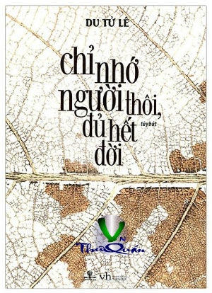

Chỉ Nhớ Người Thôi, Đủ Hết Đời
By Du Tử Lê

- Tác Giả - LỜI NÓI ĐẦU
- Pleiku, Phần Sót Lại
- Có Chút Gì Tội Nghiệp
- Mùa Hè, Có Thực?
- Kho Tàng Dưới Lòng Đất
- Tháng Tám, Thầy Tôi, Vũ Đình Tuyến
- Chỉ Nhớ Người Thôi, Đủ Hết Đời
- Đêm. Vẫn Mưa. Như Thế
- Em Đi Bình An! May Mắn!
- Boston. Đêm. Trong Ký Ức [3]
- “Vũ Trụ” Của Một Tài Hoa Lớn
- Quê Hương Thu Nhỏ
- Cảm Ơn Sách Vở Nuôi Em Lớn
- “Em Ơi, Hà Nội Phố”
- Một Người Viết Truyện Tuổi Thơ, Tôi Biết
- Duy Nhất, Một Ngọn Cờ Tổ Quốc
- Xương, Thịt Đời Sau, Máu Rất Buồn
- Bức Tranh Sẽ Theo Buổi Chiều Trôi Vào Xa, Vắng
- Chúng Ta Cùng Một Thuyền
- Chim Đem Đi: